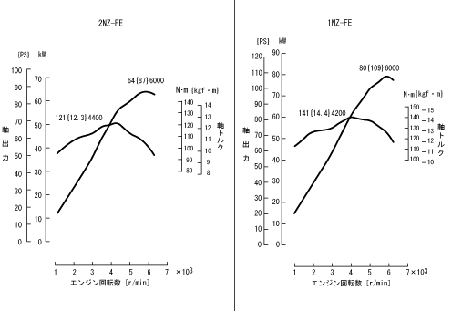

エンジン仕様 ［2NZ-FE・1NZ-FE：直打タイプ］
エンジン性能曲線

2NZ-FE・1NZ-FEエンジン仕様一覧
2NZ-FE
1NZ-FE
排気量 [L]
1.298
1.496
シリンダー数および配置
直列4気筒・横置き
←
燃焼室形状
ペントルーフ形
←
気筒数当たり吸排気弁数
各2個
←
弁機構
DOHC4弁・チェーン駆動
←
バルブ可変機構
吸気VVT-i
←
吸排気方式
クロスフロー
←
内径×行程 [mm]
75.0×73.5
75.0×84.7
圧縮比
10.5
←
燃料供給方式
EFI
←
最高出力 〈ネット〉 ［kW｛PS｝］（r/min）
64｛87｝（6000）
80｛109｝（6000）
最大トルク〈ネット〉 ［N・m｛kgf・m｝]（r/min）
121｛12.3｝（4400）
141｛14.4｝（4200）
インテークバルブ タイミング
開 き
-7～33°BTDC
←
閉 じ
52～12°ABDC
←
エキゾーストバルブ タイミング
開 き
34°BBDC
42°BBDC
閉 じ
2°ATDC
←
点火順序
1－3－4－2
←
点火システム
TDI
←
使用燃料
無鉛レギュラーガソリン
←
 2NZ-FE・1NZ-FEエンジン仕様一覧
2NZ-FE・1NZ-FEエンジン仕様一覧
2NZ-FE・1NZ-FEエンジン仕様一覧
2NZ-FE・1NZ-FEエンジン仕様一覧